DashF1Designed and built · 12 min read
Follow a Formula 1 race on one screen, and know which numbers are estimates.
DashF1 is a free web dashboard I designed and built on my own. It puts the timing, the track map, the car's data and the race messages of a Formula 1 session on one screen, as a replay or live.
- Role
- Design and build, solo
- Timeline
- July 2026
- Why
- To follow a race weekend without the broadcast, with no login and no cost
- Platform
- Web, a desktop dashboard. A Mac launcher runs it locally
- Stack
- React 18, TypeScript, Vite, Canvas and SVG, a Netlify Function
- Status
- Live and free. No usage numbers to share
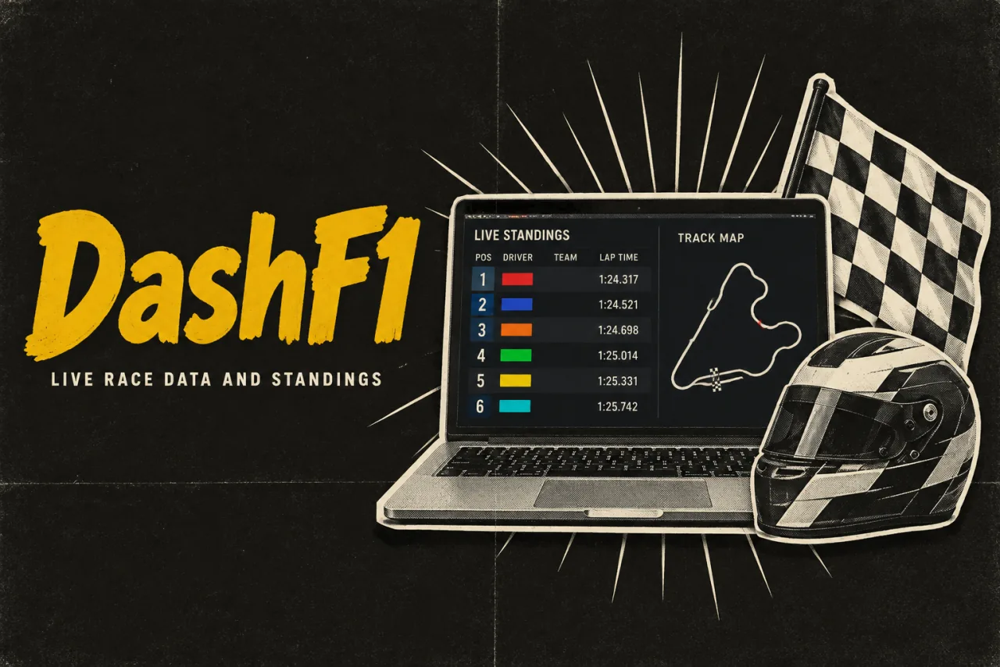
In short
- The problem: Formula 1 race data is free, but it is split across three sources. One is locked during live sessions, one has no car positions, and one only has results.
- What I built: one screen with a timing tower, a track map, car telemetry, nine tabs of race detail and a replay bar, fed from whichever source works at that moment.
- The key idea: during a live race the free feed has no GPS, so the map places cars from timing lines and says so. Anything the feed does not carry is left out, not guessed.
- Where it stands: live on the web and free. I have no usage numbers, and the latest work on race interruptions is not yet merged.
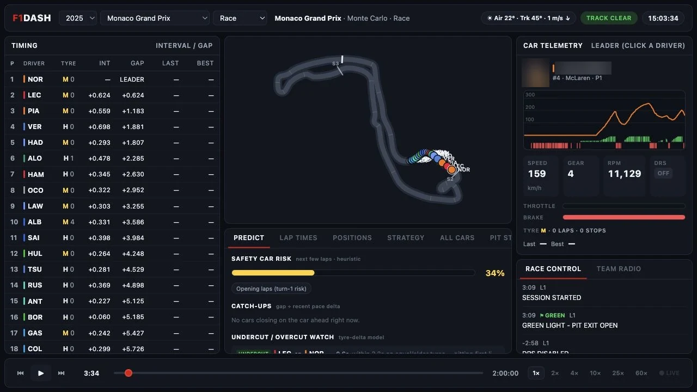
01 Why I built it
The race data is free, but no single source has all of it
DashF1 is for following a Formula 1 race weekend without watching the broadcast. It needs no login and no account, and it costs nothing.
The data to do that is public, but it lives in three places. OpenF1, a public data service, has almost everything, including GPS positions and car telemetry. Telemetry is the stream of speed, gear, throttle and brake readings from each car. But OpenF1 allows a free user about 3 requests a second, and it locks free users out while a session is live.
The official F1 live-timing feed is open during the session, but it has no GPS and no telemetry, and a web page cannot connect to it on its own. Jolpica, a results archive, adds championship standings.
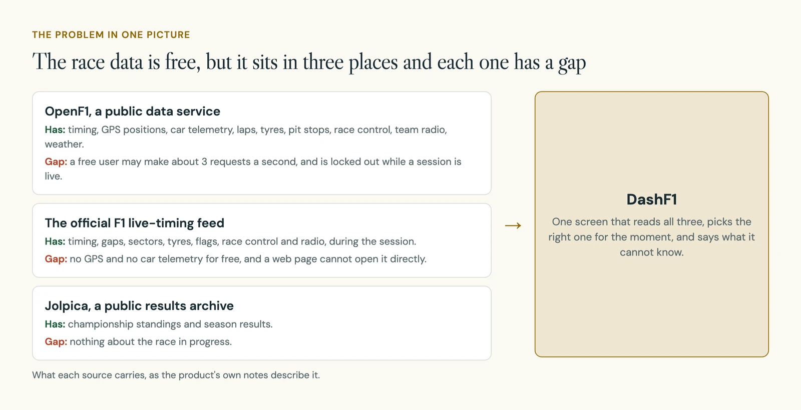
02 How it works
Timing on the left, the track in the middle, one car on the right
It opens on the most recent session that has started. From the top bar you can pick any season, Grand Prix and session. In replay, the data streams in around the point you are watching, and you can play it at up to 60 times normal speed.
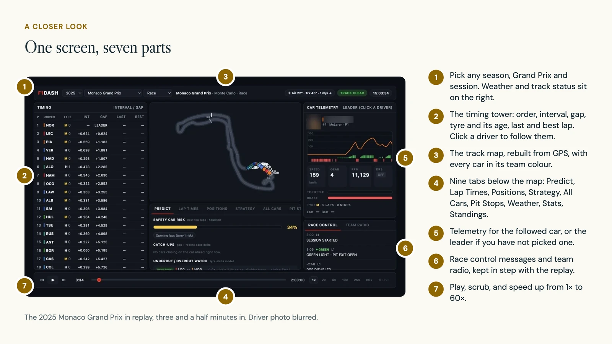
The timing tower is the running order. The panel on the right shows one car in detail. With nobody picked, that car is the leader.
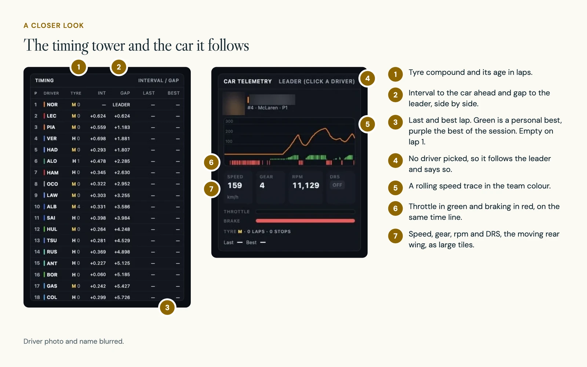
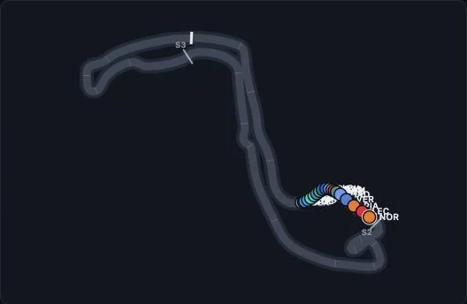
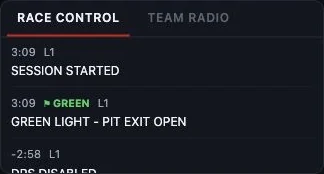
03 Decision 1
One click picks the driver for every panel
What you see: click a row in the timing tower, or a car on the map, and the whole dashboard turns to that driver. Click again to let go.
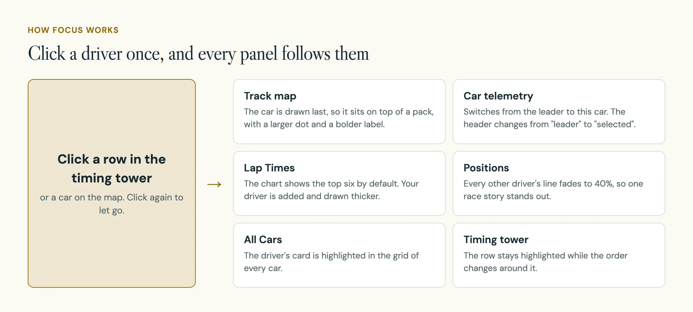
In the build: the chosen driver is held once, in one shared store, and every panel reads it from there. No panel keeps its own copy, so they cannot disagree about who you are following.
The Lap Times chart shows the top six by default and adds your driver to them. Chips above the chart let you switch other drivers on and off by hand.
04 Decision 2
During a live race, the dashboard leaves out what the free feed does not carry
What you see: in replay every panel is full. During a live session the dashboard switches to race mode. That mode shows what the free live feed carries, and leaves the rest out instead of showing dashes or made-up numbers.
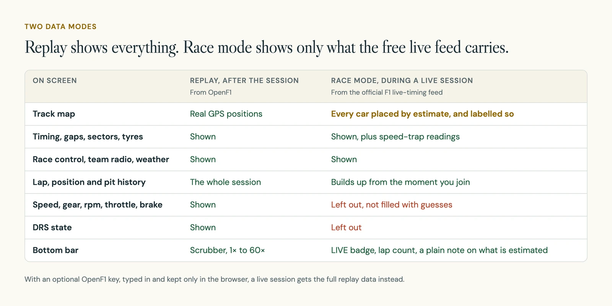
In the build: this was a reversal. On 22 July my live mode filled every panel. It worked out speed, gear, rpm, throttle and brake for every car from a profile of the circuit and the driver's pace, and tagged each value "(est)".
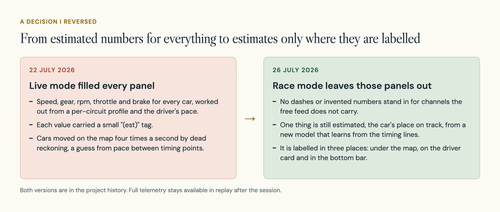
Four days later I took it out. Race mode now shows only what the feed carries, instead of putting estimates in place of what it lacks. One thing is still estimated, the car's place on the track, and it is labelled where you read it.
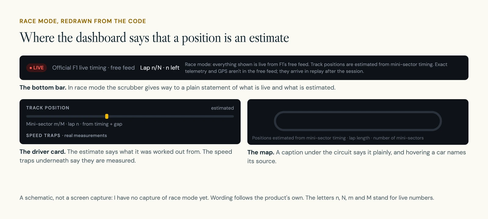
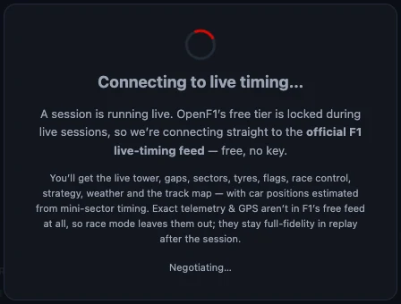
If someone has an OpenF1 key, they can type it in. It stays in their browser, and a live session then gets the full replay data.
05 Decision 3
Cars are placed from timing lines, and the map says so
What you see: during a live race every car still moves around the map. A caption under the circuit says the positions are estimated from mini-sector timing, and hovering a car tells you what its position was worked out from.
A mini-sector is one of about 20 short timing stretches in a lap. The free feed reports each car crossing each of those lines, roughly every 4 seconds, along with sector times, lap times and time gaps.
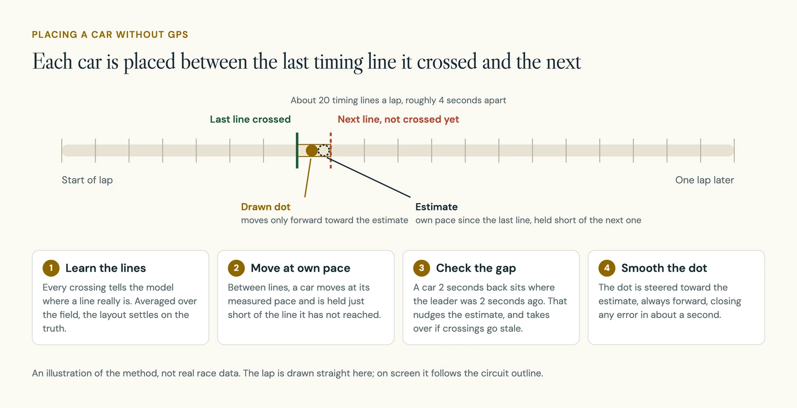
In the build: the circuit outline comes from GPS recorded earlier that weekend. Its points are spaced by time, not distance. So a car that moves along it at a steady rate is slow in corners and quick on straights without any extra work.
The model first spreads the timing lines evenly between the sector boundaries. That is only a starting guess. Each crossing shows where a line really is, so the model averages the crossings over the whole field. In testing, the real lines sat up to about 5 seconds of lap time away from that first layout.
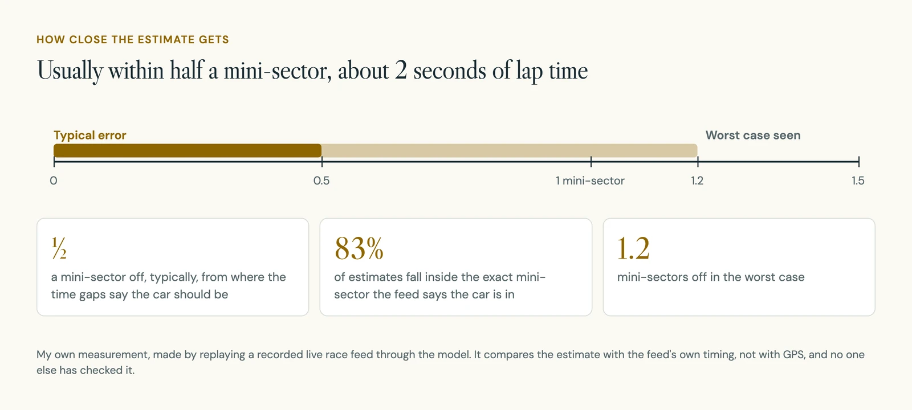
06 Decision 4
Every prediction says it is a rule of thumb
What you see: the Predict tab gives a safety-car risk, cars that are catching the one ahead, and battles where a pit stop could swap places. Each one names its method next to its title.
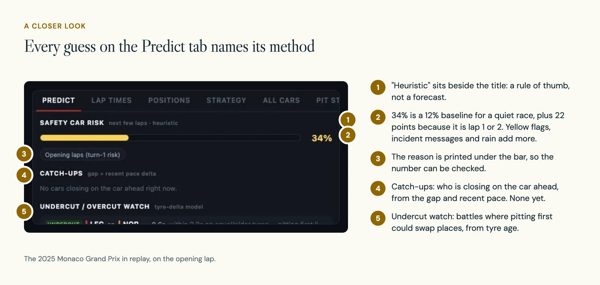
In the build: the safety-car risk starts at 12% for a quiet race. Points are added for a yellow flag, recent incident messages, the first two laps and a wet track, and the total stays between 5% and 95%. The Weather tab works the same way and labels its rain outlook "extrapolated, not a forecast".
07 Race conditions
The map was built for a green-flag race, so I taught it the rest
The first version of the position model assumed nothing interrupts the race. Every interruption either put cars in the wrong place or stopped them moving. I went through them one at a time.
| Situation | What the model now does |
|---|---|
| Safety car or virtual safety car | Pace drops by more than half at once. Every car's pace is rescaled the moment it is called, not a lap later, and learning the timing lines pauses. |
| Red flag, before the start, after the flag | The model's clock stops, so nothing drifts round an empty track. |
| Pit stop | The car is walked down the pit lane over the time cars are seen to spend there. |
| Car stopped on track | It stays on the map, frozen and ringed, until marshals have had time to clear it. A car that retires without stopping on track is removed. |
| Change of leader | The gap-based backup is re-anchored to the new leader, so it keeps working. |
| Blue flags and penalties | Read from race control and shown next to the driver. Checked against the race control feed of the 2026 Hungarian Grand Prix. |
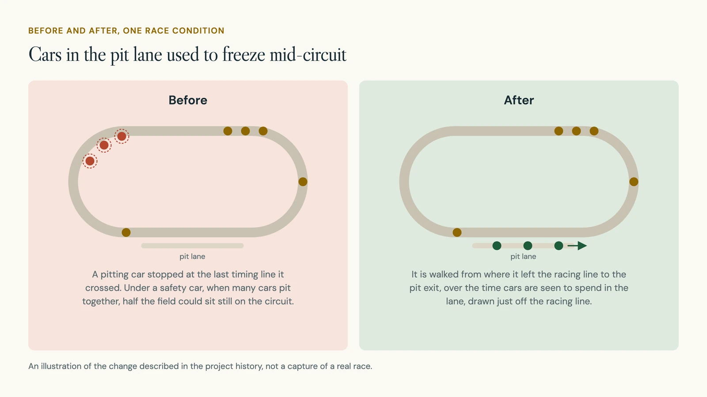
A check script drives the model through these situations on a simple test circuit. It has 16 checks: the dots never jump, never go backwards and stay close to the true position, plus checks for the safety car, red flag, lead change, pit lane and stopped cars.
08 The build
Replays run in the browser. Live timing needs a small relay.
Replays talk to the public data services straight from the browser. The live feed cannot be opened from a web page, so a small server opens it and passes it on.
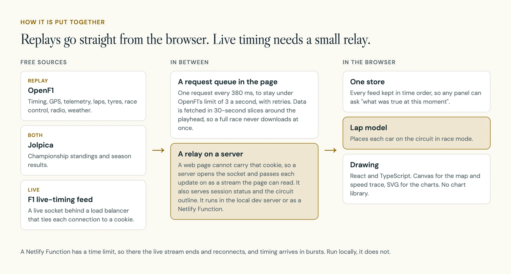
| Part | What I used |
|---|---|
| Interface | React 18, TypeScript, Vite |
| Track map and speed trace | Canvas, drawn by hand |
| Charts | SVG, with no chart library |
| Replay data | OpenF1 and Jolpica, called from the browser |
| Live data | The F1 live-timing feed, through a relay that runs as a Netlify Function or in the local dev server |
| Checks | One script for the position model. No test framework and no automated builds |
OpenF1 allows about 3 requests a second, so every request waits in one queue and goes out at least 380 milliseconds after the last. Data is fetched in 30-second slices around the playhead, so a full race never downloads at once.
- 8
- commits, 19 to 26 July 2026
- 9
- tabs of race detail
- 16
- checks on the position model
- 380 ms
- minimum gap between data requests
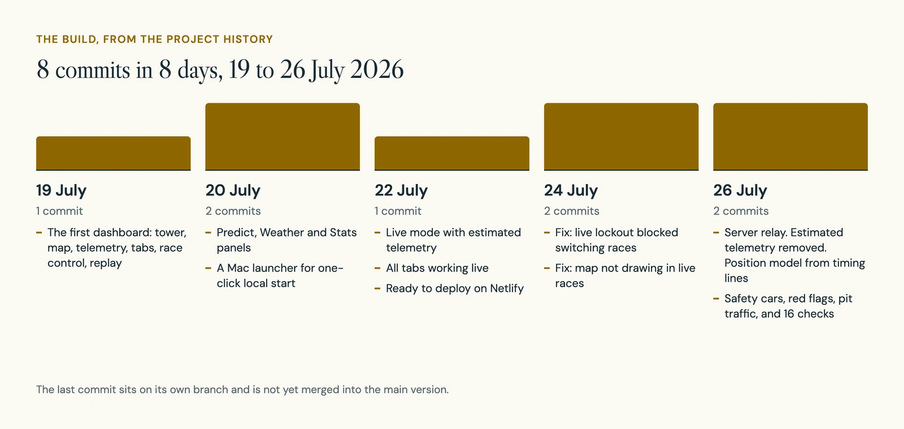
The hardest problems all came from live sessions.
| Problem | What went wrong, and what I changed |
|---|---|
| Opening the live feed | On 22 July a direct connection from the browser had worked. It did not hold. The feed's load balancer ties each connection to a cookie that a web page cannot send. I moved the connection to a server relay. |
| Locked out during a session | While a session is live, OpenF1 refuses free requests, so the race menus came up empty and you could not switch races. The menus now fall back to Jolpica's calendar. |
| The wrong circuit | An outline left over from replaying another Grand Prix stayed in place when live mode began, so every car was drawn on the wrong track. A loose name match could also find any race through the words "grand" and "prix". Outlines are now tagged with their circuit, and the lookup matches circuit and location exactly. |
| Jumpy dots | Every input arrives in steps, so dots jumped by up to half a mini-sector whenever a gap refreshed. They are now steered toward the estimate, always forward, closing the error in about a second. |
09 Where it stands
Live and free, with the newest work still on a branch
DashF1 is live on the web, free and with no login. Replay works for any past session that OpenF1 has.
I have no user counts or feedback to report. These are also not there yet:
- The safety car, red flag and pit lane work sits on its own branch and is not yet merged into the main version.
- On Netlify, a function can only run for a limited time, so the live relay ends and reconnects and timing arrives in bursts. Run locally, the feed does not break.
- I have no screen capture of race mode, because it only appears during a real session.
- The driver photos and race data come from Formula 1 and the public data services, not from me.
10 What is next
Merge the race work, then test it with people
- Merge the race-condition branch and capture race mode during a real session.
- Proposed study: ask someone to follow a battle and say which values are measured, which are history and which are estimated.
- Proposed checks: missing telemetry, stale updates, a broken stream, safety-car periods, and the switch back to replay.
11 What I learned
A dashboard should say less when it knows less
The version that filled every panel looked the most finished, but none of its telemetry was measured. Taking those numbers away made the screen more honest, and the one estimate I kept got a label in three places.
I also learned to let the data correct the starting assumptions. The first layout of the timing lines was up to 5 seconds of lap time out, and only the crossings of the whole field showed it.
One colour. A reason to look closer.